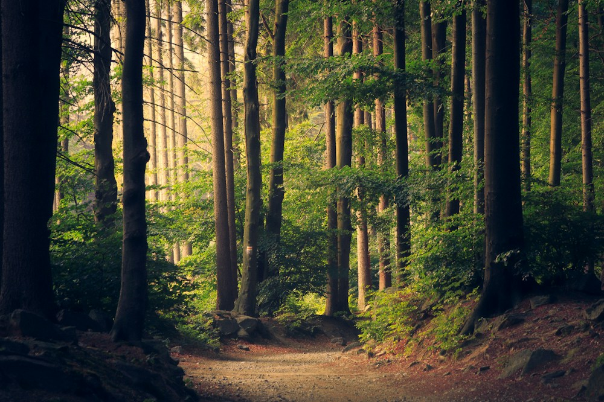

hiking · weekendreader
A weekend on the trail

Gallery post · image 2 of 3
Review trigger for the Media portion of More.
ONE ITEM OR THE WHOLE POST
Separate download rows are selected, following Continuum. Each available output stays directly accessible. This is the Media portion of More, not a new permanent feed toolbar.
Synthetic route previews only. Local photos stand in for media; no GIF/video playback, downloads, file writes, permission requests or service jobs occur. This does not verify provider support or Android storage behavior.
Separate rows selected. “All items” means this Reddit gallery post only.
hiking · weekendreader

Gallery post · image 2 of 3
Review trigger for the Media portion of More.